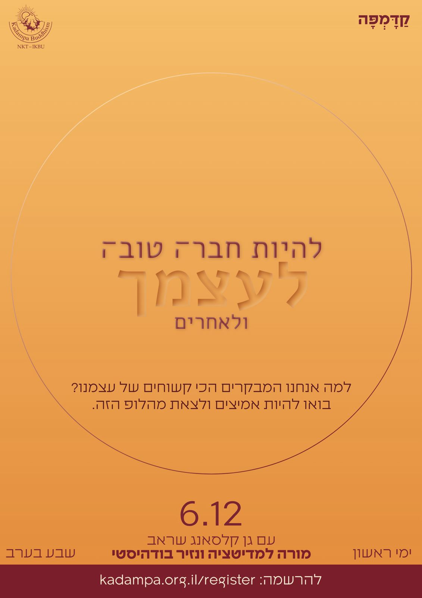

איך להיות חבר טוב של עצמי ושל אחרים
סדרת מפגשים עם גן קלסאנג שראב
דרך מעשית לרכך את הביקורת הפנימית ולטפח אומץ
רבים מאיתנו סובלים מביקורת פנימית הרסנית. הבודהיזם טוען שהסבל הזה נובע מהנטייה להעדיף את עצמנו על פני אחרים. זו טענה מפתיעה ומאתגרת, אך לפי הבודהיזם, רק כשנבין אותה לעומק נוכל להתחיל להשתחרר מהכאב שהביקורת העצמית גורמת לנו.
בסדרה הזו נחקור את הטענה המפתיעה הזו ונבין כיצד העדפת העצמי קשורה לסבל שלנו. נגלה כיצד אפשר לשנות את היחס שלנו לעצמנו ולאחרים, ולמצוא בתוכנו מקור עשיר של כוח פנימי שיעזור לנו להפחית בהדרגה את הביקורת העצמית ההרסנית ולטפח אומץ.
- מתי
- ימי ראשון, 6.12 עד 27.12
- שעה
- 19:00
- איפה
- בזום
-
06.12.2026
האם אני מרכז העולם?
הנטייה לראות את עצמנו כמרכז העולם מושרשת בנו עמוק. נחקור כיצד תפיסה זו, אף שהיא נראית לנו טבעית, עומדת בבסיס הביקורת העצמית והכאב שלנו.
-
13.12.2026
למה בעצם כל כך כואב לי?
נבחן כיצד העדפת העצמי על פני אחרים מזינה את הכאב שלנו, וכיצד ההבנה של המנגנון הזה יכולה לחולל אצלנו שינוי.
-
20.12.2026
איך לעקור את שורש הביקורת העצמית?
נכיר תרגול בודהיסטי של תשומת לב למחשבות, שיאפשר לנו לזהות כיצד הן מתפתחות ולבחור אילו מהן כדאי לטפח ועל אילו לוותר. בעזרת התמדה בתרגול זה, נגלה שאנו יכולים לשחרר את עצמנו מכאב רב, להפסיק את הביקורת העצמית ההרסנית ולפתח אומץ לעמוד מול המחשבות השליליות שלנו.
-
27.12.2026
האתגר האמיתי: לצאת מעצמי
במפגש זה נכיר את התרגול הבודהיסטי של החלפת העצמי באחרים - תרגול מאתגר שפותח אפשרות למערכת יחסים חדשה עם עצמנו ועם הסובבים אותנו. נלמד כיצד לגשת אליו נכון ולגלות בתוכנו מקורות עמוקים של אהבה, שקט וביטחון, שיסייעו לנו להתמודד עם אתגרי החיים בדרך חדשה.

גן קלסאנג שראב
מורה למדיטציה ונזיר בודהיסטי
גן קלסאנג שראב מתרגל במסורת קדמפה החדשה כבר כ־30 שנה, מתוכן 22 שנים כנזיר בודהיסטי.
הוא גדל בירושלים ובתל אביב, ולאחר שירותו הצבאי יצא לטייל בעולם. באמסטרדם פגש את הבודהיזם, ובהמשך חי ופעל במרכזים בודהיסטיים באנגליה. לאחר שסייע בפיתוח המרכזים ביורק ובניוקאסל, עבר בשנת 2024 לגלזגו שבסקוטלנד, שם הוא מתגורר כיום וממשיך לפתח את המרכז הבודהיסטי המקומי.
מתוך שנים רבות של לימוד, מדיטציה והדרכה, גן שראב מלמד בגובה העיניים, בשפה נגישה ובחיבור אישי לאנשים. הוא מקשר בין התורה הבודהיסטית לחוויות ולאתגרים של חיי היומיום, ומראה כיצד אפשר ליישם את התרגול באופן מעשי ולשלב אותו בשגרת החיים.
כיום הוא מעביר שיעורים שבועיים בזום, ומגיע להעביר שיעורים פיזיים ברחבי הארץ כל שישה שבועות.